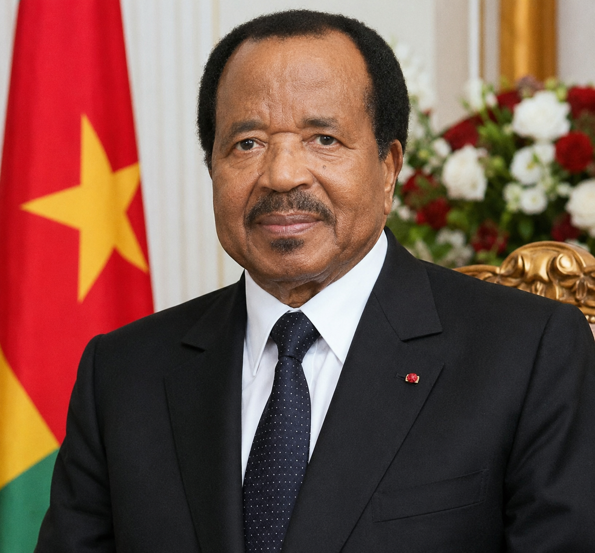

DOCUMENTATION ON HIS EXCELLENCES PRESIDENT PAUL BIYA

THE FORCE OF EXPERIENCE
Cameroon'sOur Nation,
Our PresidentServing cameroon since 1982.
Born on february 13,1933, in Mvomeka'a, Cameroon,Paul Biya is the nation's second president, having assumed office on November 6,1982,after president Ahmadou Ahidjo's sudden resignation.As one of the world's longest-serving leaders,his presidency has been marked by democratic transitions,economic stabilization,and complex political tensions.
Biography and Early Life
- Birth & Origins:Born Paul Barthelemy Biya'a bi Mvondo, he hails from the South Region of Cameroon.He was raised by parents Etienne Mvondo Assam and Anastesie Eyenga Elle.
- Education:Initially destined for the clergy,Biya attended several seminary schools until 1954 before graduating from lycee General Leclerc in Yaounde.Hee subsequently relocated to France,studying at the University of Paris(Sorbonne),the institute of Political studies(Sciences Po),and the institute of Higher Overseas Studies(IHEOM),earning degrees in Public Law and Political Science.
- Early Career:Returning to Cameroon in the early 1960s, he quickly rose through the bureaucratic ranks.He served as charge de mission,Director of the civil Cabinet, and Secretary-General of the Presidency.
How He Became President
- Appointment as Prime Minister:President Ahmadou Ahidjo appointed Biya Prime Minister in June 1975,a stategic move that made a Southern Catholic the second -in-command to a Northern Muslim.
- Constitutional succession:In 1979, Ahidjo enacted legislation designating the Prime Minister as the legal constitutional successor to the presidency.
- Ascension to the Presidency:In an unexpected move,Ahidjo resigned from power on November 4,1982.Pursuant to the constitution,Biya was sworn in as president two days later ,on November 6,1982.
Major Achievements and Presidency Milestones
- Introduction of Multi-Party Democracy:Following domestic pressures and internal reforms in the 1990s,Biya legalized Multi-Party politics and oversaw the country's first multi-party elections,formally dissolving the single-party system to create the CPDM(Cameroon People's Democratic Movement).
- Economic Liberalization:Biya transitioned the state toward economic liberalization,encouraging privatization and private investments that helped steer Cameroon through severe macroeconomic crises to achieve relative structural stability.
- National Integration:Through the 199 constitutional reforms and the implementation of decentralised governance, Biya has navigated Cameroon's diverse linguistic and cultural divides,culminating in specialised national dialogues and a "special status"designation for the Anglophone Northwest and Southwest Regions.
- Diplomacy and Global Relation:Biya's leadership has maintained Cameroon as a strategic,stabilizing anchor in Central Africa,facilitating ongoing collaborations with the united nations and international coalitions.